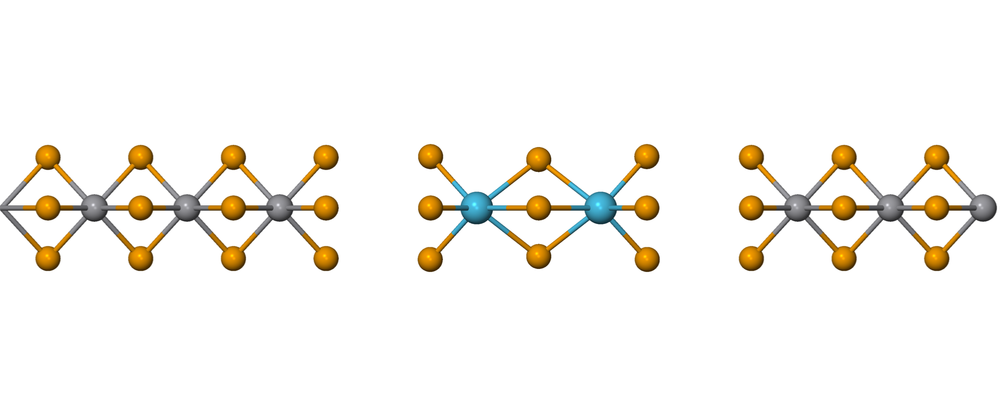

03. VSe₃–Hf₂Se₉ heterostructure separation test
Goal
In the VSe₃ (3 unit cells)–Hf₂Se₉–VSe₃ (3 unit cells) heterojunction, compute the single-point energy as a function of the VSe₃–Hf₂Se₉ interface separation d (2.5–4.0 Å), to find the equilibrium interface distance and check whether DFT reproduces the experimentally observed ~3.5 Å minimum.
Method
Three versions were computed. Because their structures differ, total energy cannot be compared directly between versions; only the energy trend within each version is compared, with d = 4.0 Å as the per-version reference.
| Version | Functional | Structure origin | Interface arrangement |
|---|---|---|---|
| 07-hetero | vdW-DF2 | vdW-DF2 relaxed | V-Se₃-V (asymmetric) |
| 08-hetero-v2 | vdW-DF2 | same as 07, flipped so Se faces Se | Se₃-V-Se₃ (symmetric) |
| 09-hetero-d2 | PBE+D2 | PBE+D2 relaxed | Se₃-V-Se₃ (symmetric) |
- 07 vs 08: same functional, same structure — interface arrangement only (V-facing vs Se-facing). Total energy is directly comparable.
- 07/08 vs 09: functional and relaxed structure both differ — total energy not directly comparable.
Result
All three decrease monotonically over 2.5–4.0 Å — no minimum within the scanned range.
| d (Å) | 07 vdW-DF2 V-Se₃-V (eV) | 08 vdW-DF2 Se₃-V-Se₃ (eV) | 09 PBE+D2 Se₃-V-Se₃ (eV) |
|---|---|---|---|
| 2.5 | −3.73 | −6.21 | −8.31 |
| 3.0 | −2.00 | −4.10 | −4.89 |
| 3.5 | −0.84 | −1.61 | −1.84 |
| 4.0 | 0.00 | 0.00 | 0.00 |




Discussion
- All three keep decreasing at d = 2.5 Å — no minimum is found within 2.5–4.0 Å.
- 07 vs 08 (same functional, interface only): the Se–Se symmetric arrangement (08) has a steeper slope than V-facing (07), and its total energy at d = 4.0 Å is 0.60 eV lower — i.e. the Se–Se interface binds more strongly.
- 09 (PBE+D2) cannot be compared directly to 07/08 because both functional and relaxed structure differ.
This monotonic behavior motivated the dangling-bond hypothesis and the H-termination test (see H termination), where passivating the VSe₃ interface Se restores a minimum near d ≈ 3.5 Å.